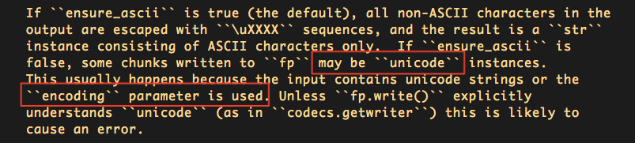

字符编码问题
了解python字符编码之前，要先了解一个老生常谈的问题，"unicode" 和 "str" 有什么区别
1. unicode 和 str
unicode是通用的字符编码，它被不同的编码方式(如utf-8, gbk...)编码后，变成由不同byte组成的str
Unicode 提供了所有我们需要的字符的空间，但是计算机的传输只能通过bytes 。我们需要一种用 bytes 来表示 Unicode 的方法这样才可以存储和传播他们，这个过程就是encoding
在python中，unicode通过encode转换成str，str通过decode转换成unicode
>>> a = "测试" >>> type(a), a (<type 'str'>, '\xe6\xb5\x8b\xe8\xaf\x95') # a是utf-8编码的str >>> b = a.decode("utf-8") >>> type(b), b (<type 'unicode'>, u'\u6d4b\u8bd5') # b是a用utf-8解码后的unicode >>> c = b.encode("gbk") >>> type(c), c (<type 'str'>, '\xb2\xe2\xca\xd4') # c是b用gbk编码后的str，可以看到，编码后的c和a已经不同了，虽然它在gbk终端下显示出来的仍然是中文"测试"python2对unicode和str会做一些隐式操作，允许二者混用
当你进行unicode 和 str 拼接的时候，python会对str做decode操作，隐式转换成unicode进行拼接
>>> a = "test" >>> b = u"test" >>> type(a), type(b) (<type 'str'>, <type 'unicode'>) >>> type(a + b) <type 'unicode'> # 拼接后的结果为unicode，因为python帮你完成了b(str)到b(unicode)的转换python默认用ascii编码来对str做decode，这种转换，在字符串是全英文时没有任何问题；但是当字符串存在中文时，一旦编码不符，这种隐式转换就会报错
>>> a = "测试" >>> b = u"测试" >>> type(a), type(b) (<type 'str'>, <type 'unicode'>) >>> c = a + b Traceback (most recent call last): File "<stdin>", line 1, in <module> UnicodeDecodeError: 'ascii' codec can't decode byte 0xe6 in position 0: ordinal not in range(128) # 这里的报错原因是："测试"是utf-8终端编码输入的str，在用ascii编码方式做decode时，会出现解码错误理论上，str是编码后的字符串，只允许做解码(decode)；unicode是解码后的字符串，只允许做编码(encode)。但是实际上，python的隐式操作使得二者可以任意编解码
>>> a = "test" >>> type(a) <type 'str'> >>> a.encode("utf-8") # python底层处理为a.decode("ascii").encode("utf-8") 'test' >>> a.decode("utf-8") u'test' >>> b = u"test" >>> type(b) <type 'unicode'> >>> b.encode("utf-8") 'test' >>> b.decode("utf-8") # python底层处理为a.encode("ascii").decode("utf-8") u'test' # 同样，当字符串中存在中文时，这种通过ascii编码方式做的隐式转换，在编码不符时就会报错 >>> a = "测试" >>> type(a) <type 'str'> >>> a.encode("utf-8") Traceback (most recent call last): File "<stdin>", line 1, in <module> UnicodeDecodeError: 'ascii' codec can't decode byte 0xe6 in position 0: ordinal not in range(128)
python2这种隐式转换的存在，看起来是让程序员在写程序的时候不用考虑unicode和str的类型；但实际上看看上面演示的那些情况，当你的接口处理过程中存在中文字符，而你又忽略了unicode和str的区别，在python2做隐式转换时，程序就会出错
最安全的做法是，在程序处理返回时，对字符串采用统一的编码；不同编码的str按照各自编码decode成unicode后，再采用统一的编码方式encode成str来进行返回
>>> a = u"测试".encode("utf-8") >>> b = u"测试".encode("gbk") >>> c = (a.decode("utf-8") + b.decode("gbk")).encode("utf-8") >>> print c 测试测试
2. json处理中的字符编码问题
python的官方json包用于做字典<=>字符串之间的转换工作，然而这个转换的过程中，对字符编码的处理上有一些需要额外注意的地方
>>> a = {"data": "测试"}
>>> print json.dumps(a)
{"data": "\u6d4b\u8bd5"}
可以看到，当通过json.dumps()将字典a转换为字符串的过程中，对字典中的元素返回的是unicode的结果("\u6d4b\u8bd5")。我们知道，unicode是通过str解码来的。在调用json.dumps()时，可以指定一个参数encoding，这个参数默认为utf-8，也就是默认以utf-8编码方式来进行解码，官方包里对encoding的描述如下：
``encoding`` is the character encoding for str instances, default is UTF-8.
因此，如果你需要解析一个gbk编码的字典对象，就需要指定encoding="gbk"
>>> a = {"data": u"测试".encode("gbk")}
>>> print json.dumps(a) # 没有指定编码方式时，默认用utf-8解码，会报错
Traceback (most recent call last):
File "<stdin>", line 1, in <module>
File "/usr/local/Cellar/python/2.7.13_1/Frameworks/Python.framework/Versions/2.7/lib/python2.7/json/__init__.py", line 244, in dumps
return _default_encoder.encode(obj)
File "/usr/local/Cellar/python/2.7.13_1/Frameworks/Python.framework/Versions/2.7/lib/python2.7/json/encoder.py", line 207, in encode
chunks = self.iterencode(o, _one_shot=True)
File "/usr/local/Cellar/python/2.7.13_1/Frameworks/Python.framework/Versions/2.7/lib/python2.7/json/encoder.py", line 270, in iterencode
return _iterencode(o, 0)
UnicodeDecodeError: 'utf8' codec can't decode byte 0xb2 in position 0: invalid start byte
>>> print json.dumps(a, encoding="gbk") # 指定encoding="gbk"后，可以正常输出json字符串
{"data": "\u6d4b\u8bd5"}
不过，此时输出的json字符串中，中文字符是unicode的，不能正常显示；当你的接口想要返回一个可正常显示的含有中文字符的json字符串时，需要在调用json.dumps()时指定ensure_ascii参数为False
>>> a = {"data": u"测试".encode("gbk")}
>>> print json.dumps(a, encoding="gbk", ensure_ascii=False)
{"data": "测试"}
虽然可以正常显示了，但是这时候引入了一个新的问题
>>> a = {"data": u"测试".encode("gbk")}
>>> b = json.dumps(a, encoding="gbk")
>>> c = json.dumps(a, encoding="gbk", ensure_ascii=False)
>>> print type(b), b
<type 'str'> {"data": "\u6d4b\u8bd5"} # 原始json.dumps()的结果类型为str
>>> print type(c), c
<type 'unicode'> {"data": "测试"} # 设置ensure_ascii后json.dumps()的结果类型为unicode
要知道，当结果中存在中文字符的时候，是需要格外注意字符串类型是unicode还是str的，否则会在程序处理过程中出现问题。比如我们的接口中需要处理一个含有gbk编码元素的字典，然后返回utf-8编码的json结果
>>> a = {"data": u"测试".encode("gbk")}
>>> b = json.dumps(a, encoding="gbk", ensure_ascii=False)
>>> b.decode("gbk").encode("utf-8") # 进行gbk解码，并进行utf-8编码返回
Traceback (most recent call last):
File "<stdin>", line 1, in <module>
UnicodeEncodeError: 'ascii' codec can't encode characters in position 10-11: ordinal not in range(128)
# 由于设置ensure_ascii=False时，json.dumps()返回的结果从str变成了unicode；因此当我们对一个unicode的结果进行decode解码时，就会报错
可能有人会说，那我碰到ensure_ascii=False的情况时，既然都知道返回的和原来不一样，是个unicode了；那我直接对它做encode，不按照原来处理str的方法(先decode成unicode，再encode成目标编码的str)，不就行了吗？但是事实上并没有那么简单。当我们的原始编码是utf-8，目标编码是gbk时，情况又不一样了
>>> a = {"data": u"测试".encode("utf-8")}
>>> b = json.dumps(a, encoding="utf-8", ensure_ascii=False)
>>> b.encode("gbk")
Traceback (most recent call last):
File "<stdin>", line 1, in <module>
UnicodeDecodeError: 'ascii' codec can't decode byte 0xe6 in position 10: ordinal not in range(128)
当ensure_ascii=False的时候，json.dumps()返回的结果不是unicode吗？对一个unicdoe的字符串，我们应该是可以encode成任意str的，怎么上面又报错了呢？我们来看一下现在json.dumps()的结果类型
>>> type(b)
<type 'str'>
说好的unicode，在utf-8编码下又变回了str。我们来看下这个ensure_ascii的官方注解

可以看到，json.dumps()当设定ensure_ascii=False，且使用了encoding参数时，才会返回unicode。encoding=utf-8时之所以返回的是str，是因为json.dumps()方法默认的encoding=utf-8，相当于encoding parameter is not used，因此仍然保持原str返回。
2.1. 总结
- 当使用json.dumps()处理含有中文字符的字典时，需要格外注意编码问题
- 如果源输入是utf-8编码，直接使用json.dumps(a, ensure_ascii=False)即可，默认encoding=utf-8，返回的就是一个utf-8编码的str
- 如果源输入是其他编码，如gbk，则使用json.dumps(a, ensure_ascii=False, encoding="gbk")，返回的是一个unicode，可以根据需要encode成目标编码的str进行传输
参考链接: